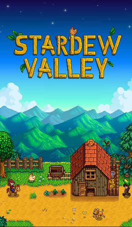

Stardew Valley

ЖАНР: Simulation, role-playing
РОЗРОБНИК: ConcernedApe
ЛОКАЛІЗАЦІЯ: Pereclaw
ПЛАТФОРМА: PS VITA
ІНСТРУКЦІЯ:
При наявності плагіна можна пропустити перший крок.
Крок 1. Щоб встановлювати різні переклади на PS Vita вам треба буде завантажити плагін rePatch з AutoPlugin 2 (підписан як Repatch by dots-tb).
Після встановлення зайдіть у VitaShell та перевірте, щоб в ux0: була папка rePatch. Якщо її немає, то створіть її.
Крок2. Коли у вас вже є встановлений плагін, то можна скачати переклад на ПК (посилання нижче). На самій консолі перейдіть у VitaShell в ux0:app/PCSB01226/Content , якщо у вас EUR регіон, чи ux0:app/PCSE01235/Content , якщо у вас USA регіон, та перейменуйте файл Content.psarc на Сont.psarc .
Тепер ви можете підключити консоль до пк і перенести потрібну, в залежності від регіону гри, папку з архіву в ux0:rePatch . Для EUR регіону повинно вйити ux0:rePatch/PCSB01226 , а для ux0:rePatch/USA PCSE01235 . На цьому все.
ПОСИЛАННЯ: